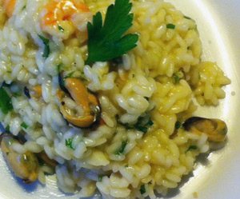

Risotto Frutti di Mare
5 von 6Eine Schalotte und einen Knoblauchzehen fein schneiden und mit dem guten Risottoreis (zwei Hände voll pro Person) in Olivenöl und etwas Butter andämpfen. Die Schale einer unbehandelten Zitrone fein geraspelt beigeben. Mit etwas Weisswein ablöschen. Immer wieder Geflügelbouillon (am besten selbstgemacht) hinzufügen, bis der Risotto knapp gar ist. Eine Schachtel gemischte Meeresfrüchte (tiefgefroren, aufgetaut) beigeben. Mit Salz, Pfeffer und dem Saft einer halben Zitrone abschmecken. Butter und etwas Olivenöl dazugeben und ohne Parmesan in hohen Tellern servieren.
